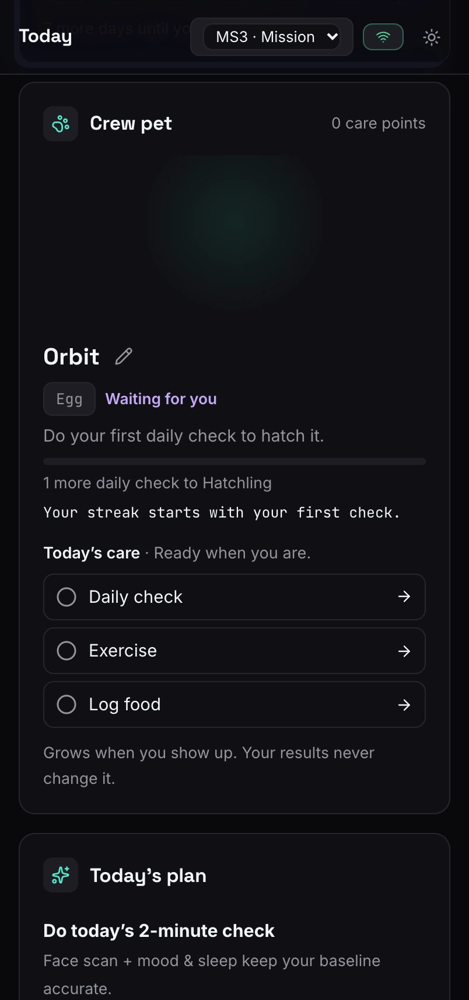
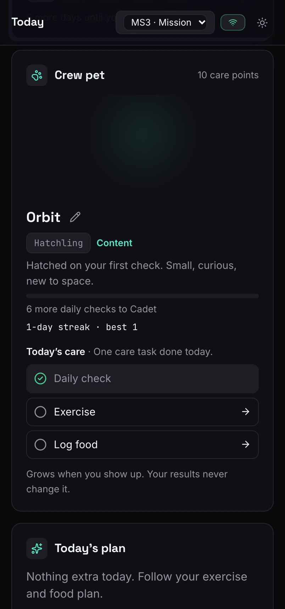
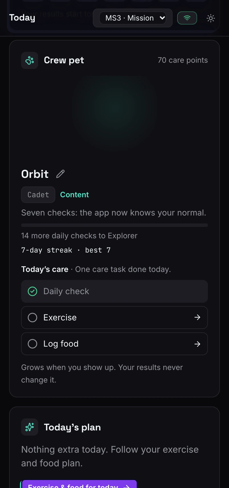

Signal delay · Earth ⇄ Mars · up to 22 min
One way. Each message, each answer.
On the way to Mars, help is far away.
No doctor on board.
So who notices when your body starts to change?
Daily check
Two minutes.
Just the camera.
Only the dots are drawn.
Video never leaves the device.
Your own normal
Compared with you.
Not an average.
Small changes show up early.
Reminders
A nudge each morning.
Set on the device. No signal needed.
Crew pet
Show up daily.
It grows with you.
Crew Mirror
Your health, measured against you.
Team SYS-ASTRO · NASA Space Apps Seoul 2026
Prototype, not a medical device.
9:41
You haven’t done today’s checknow
Two minutes now keeps your normal accurate.


